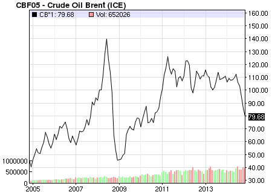

2014-11-24 22:28:00
最近五个月，原油价格跌了将近1/3，对诸產油国的财政收支带来了很大的衝撃。恰巧的是，有种不听美国摆布的国家里，除了中共和其所支持的北韩以外，基本上都是靠出口原油换来的胆子，例如俄国、伊朗和委内瑞拉，而他们也都在这轮油价的跌势里，吃尽了苦头。尤其是俄国，原本已经因为欧盟的制裁而面临经济困难，一旦占其出口总额2/3的油气能源价格大跌，其整体经济前景便极为暗淡，国内外资金因此而外逃，使卢布也跌了1/3。俄国的财政部长Anton Siluanov日前估计欧盟制裁对俄国经济造成的年损失为400亿美元，因油价跌到大约$80一桶所受的损失却高达1000亿美元，而俄国可用的外匯只有2700亿美元，所以这也就是为什么最新一期的《经济学人》（《Economist》，英国的着名经济周刊）幸灾乐祸地预言普丁将在两年内下台。
北海原油（Brent Crude）名义价格（Nominal Price）的十年图，今天（2014年十一月24日）的收盘价是$79.68。名义价格没有考虑通货膨涨，如果改用定值（Constant Value）美元，曲线的左边会向上提升一些，所以现在的油价大约等同于2005年和2006年的水准，但是2004年以前和2009年初的油价仍比现在便宜。换句话说，虽然目前的油价和过去十年相比是处于较低的价位，和过去三十年来比其实还算是高的。只是由俭入奢易，由奢入俭难，產油国享受惯十年的好日子，一下子重回歷史常态就受不了了。
至于为什么会有供需不平衡导致油价下跌，大家都同意有三个原因：首先是过去十年推高油价的中国的能源需求成长率从以往的5-10%跌到了今年的4%。其次是美国开发了大量的页岩油，在最近几年替代了美国大约一半的原油进口量。而所有的主要產油国，包括原本受战祸影响的伊拉克和利比亜，在今年都持续增產；尤其是沙乌地阿拉伯，以往一直是唯一能在油价下跌期间顾全大局，以减產来稳定供需平衡的国家，但是这一次却產能全开，以致原油供需完全失衡。由于三个因素里面，美国直接控制了页岩油，而沙乌地阿拉伯则是美国的忠实“盟友”，所以有人提出了阴谋论，认为这次的油价下跌是美国设计来打撃俄国的手段。我个人对此是存疑的：因为页岩油的技术突破是十几年前的事，其產量的大幅稳定增加则完全是受2011年后高油价的影响，和美国政府没有关系。所以即使沙乌地阿拉伯是受了美国的劝托或为了打撃死敌伊朗的经济或是反过来为了与页岩油竞争而拼命抽油，大环境上还是运气使然。
不论为什么沙乌地这次会不顾油价走势而维持產能，原油已经即将跌到一个非常重要的支撑点，也就是页岩油的生產成本。页岩油是一种所谓的“紧油”（Tight Oil），开採时必须使用许多物理和化学手段把它和周围的页岩分离开来，因此很多页岩油必须卖到$50至$80一桶才有合理的利润。而且每一个页岩油井的產油寿命很短，只有不到两年，所以一旦价銭跌下去，新投资不再合算了，过了一年多，所有的页岩油產能就自动过时。目前世界上成本超过$80一桶的紧油就有每天260万桶的產能，到2015年底这些產能应该都会消失。如果油价再往下跌，消失的產能会增加得很快。所以总体来看，$79一桶的油价已经没有太大的下降空间，即使跌下去也只是2015年一年而已；只要中共继续提供足够的金融支持，普丁撑下去的机会是不小的。